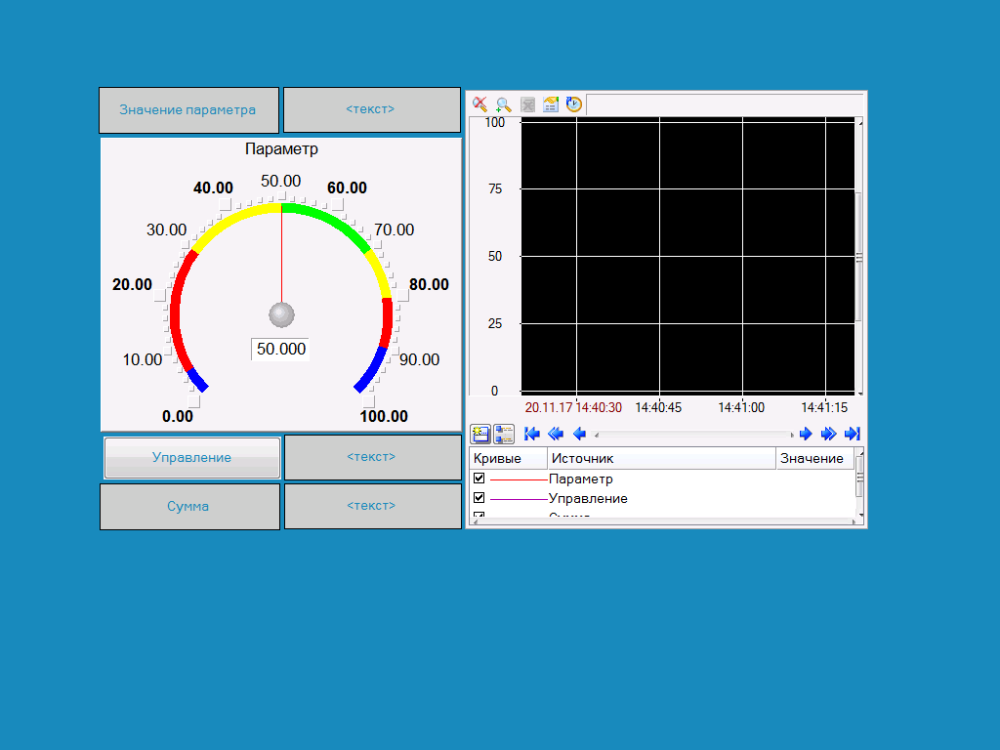

| Система |
| RTM_1 |
| Технология |
| Топология |
| Источники/Приемники |
| КИПиА |
| Шаблоны_программ |
 | Шаблоны_экранов |
| Шаблоны_документов |
| Шаблоны_связей_с_СУБД |
| Ресурсы |
| Принадлежность: | |
| организация: | |
| Создан: | 20.11.2017 13:40:49 |
| Модифицирован: | 20.11.2017 14:08:56 |
| Комментарий: | |
| Число шаблонов программ: | 1 |
| Число шаблонов экранов: | 1 |
| Число шаблонов отчетов: | 0 |
| Число шаблонов связей с БД: | 0 |
| Число каналов: | 4 |
| Число источников/приемников: | 1 |
| Слой конфигурирования узлов проекта | ||
| |||
| Слой для разработки проекта "от технологии" | ||
| Слой для разработки проекта "от топологии" | ||
| Описания источников/приемников различных приборов и приложений | ||
| Схема соединений АСУ | ||
| Шаблоны программ | ||
| Шаблоны экранов | ||
| Шаблоны отчетов | ||
| Шаблоны связей с БД | ||
| Наборы текстов, рисунков, видеоклипов и графических объектов |
Система |
| Параметр | Value | ||||||||||
|---|---|---|---|---|---|---|---|---|---|---|---|
| Имя | Система | ||||||||||
| Комментарий | Слой конфигурирования узлов проекта | ||||||||||
| Тип | Система | ||||||||||
| Содержимое слоя |
|
Система. |
| Параметр | Value | ||||||||||||||||||||||||||||||||||||||||
|---|---|---|---|---|---|---|---|---|---|---|---|---|---|---|---|---|---|---|---|---|---|---|---|---|---|---|---|---|---|---|---|---|---|---|---|---|---|---|---|---|---|
| Имя | RTM_1 | ||||||||||||||||||||||||||||||||||||||||
| Кодировка | GH0 | ||||||||||||||||||||||||||||||||||||||||
| Комментарий | |||||||||||||||||||||||||||||||||||||||||
| Тип | RTM | ||||||||||||||||||||||||||||||||||||||||
| Период пересчета | 10 | ||||||||||||||||||||||||||||||||||||||||
| Разрешение | 0.055 | ||||||||||||||||||||||||||||||||||||||||
| Имя компьютера | |||||||||||||||||||||||||||||||||||||||||
| Пароль | |||||||||||||||||||||||||||||||||||||||||
| Характеристика | |||||||||||||||||||||||||||||||||||||||||
| Глобальный регистратор при старте | 0 | ||||||||||||||||||||||||||||||||||||||||
| Статус глобального регистратора | 0 | ||||||||||||||||||||||||||||||||||||||||
| AI 5710 | 10 | ||||||||||||||||||||||||||||||||||||||||
| AI 5720 | 10 | ||||||||||||||||||||||||||||||||||||||||
| AI Круиз | 10 | ||||||||||||||||||||||||||||||||||||||||
| AI МФК | 1000 | ||||||||||||||||||||||||||||||||||||||||
| AI 5700 | 10 | ||||||||||||||||||||||||||||||||||||||||
| AI 5648 | 50 | ||||||||||||||||||||||||||||||||||||||||
| AI LA 16/8 | 20 | ||||||||||||||||||||||||||||||||||||||||
| PCL 711/813 | 10 | ||||||||||||||||||||||||||||||||||||||||
| MIC 2718/PCL 818 | 10 | ||||||||||||||||||||||||||||||||||||||||
| MUX16(c 5710,5720) | 100 | ||||||||||||||||||||||||||||||||||||||||
| MUX(c PCL) | 100 | ||||||||||||||||||||||||||||||||||||||||
| PCL GainControl | 10 | ||||||||||||||||||||||||||||||||||||||||
| Преобразование | 2000 | ||||||||||||||||||||||||||||||||||||||||
| Шлюз | 0 | ||||||||||||||||||||||||||||||||||||||||
| Использовать шлюз | 0 | ||||||||||||||||||||||||||||||||||||||||
| Индивидуальный сетевой адрес | 0 | ||||||||||||||||||||||||||||||||||||||||
| Групповой сетевой адрес | 255 | ||||||||||||||||||||||||||||||||||||||||
| Прием | 0 | ||||||||||||||||||||||||||||||||||||||||
| Посылка | 0 | ||||||||||||||||||||||||||||||||||||||||
| Прием | 0 | ||||||||||||||||||||||||||||||||||||||||
| Посылка | 0 | ||||||||||||||||||||||||||||||||||||||||
| Прием | 0 | ||||||||||||||||||||||||||||||||||||||||
| Посылка | 0 | ||||||||||||||||||||||||||||||||||||||||
| Прием | 0 | ||||||||||||||||||||||||||||||||||||||||
| Посылка | 0 | ||||||||||||||||||||||||||||||||||||||||
| Имя файла DOS-архива | |||||||||||||||||||||||||||||||||||||||||
| Количество буферов архива | 0 | ||||||||||||||||||||||||||||||||||||||||
| Статус состояния архива | 0 | ||||||||||||||||||||||||||||||||||||||||
| Имя файла отчета тревог | |||||||||||||||||||||||||||||||||||||||||
| Максимальный размер файла в записях | 0 | ||||||||||||||||||||||||||||||||||||||||
| Статус ОТ | 0 | ||||||||||||||||||||||||||||||||||||||||
| Имя файла дампа | |||||||||||||||||||||||||||||||||||||||||
| Подчитать | 0 | ||||||||||||||||||||||||||||||||||||||||
| Сохранять | 0 | ||||||||||||||||||||||||||||||||||||||||
| Период сохранения состояния системы | 1 | ||||||||||||||||||||||||||||||||||||||||
| Имя файла архива | |||||||||||||||||||||||||||||||||||||||||
| Размер файла архива | 128 | ||||||||||||||||||||||||||||||||||||||||
| Период сохранения кэша | 300 | ||||||||||||||||||||||||||||||||||||||||
| Размер кэша | 48 | ||||||||||||||||||||||||||||||||||||||||
| Статус состояния архива | 0 | ||||||||||||||||||||||||||||||||||||||||
| Максимальный Размер Очереди записей | 450000 | ||||||||||||||||||||||||||||||||||||||||
| Имя файла архива | |||||||||||||||||||||||||||||||||||||||||
| Размер файла архива | 128 | ||||||||||||||||||||||||||||||||||||||||
| Период сохранения кэша | 300 | ||||||||||||||||||||||||||||||||||||||||
| Размер кэша | 48 | ||||||||||||||||||||||||||||||||||||||||
| Статус состояния архива | 0 | ||||||||||||||||||||||||||||||||||||||||
| Максимальный Размер Очереди записей | 450000 | ||||||||||||||||||||||||||||||||||||||||
| Имя файла архива | |||||||||||||||||||||||||||||||||||||||||
| Размер файла архива | 128 | ||||||||||||||||||||||||||||||||||||||||
| Период сохранения кэша | 300 | ||||||||||||||||||||||||||||||||||||||||
| Размер кэша | 48 | ||||||||||||||||||||||||||||||||||||||||
| Статус состояния архива | 0 | ||||||||||||||||||||||||||||||||||||||||
| Максимальный Размер Очереди записей | 450000 | ||||||||||||||||||||||||||||||||||||||||
| Имя файла архива | |||||||||||||||||||||||||||||||||||||||||
| Размер файла архива | 128 | ||||||||||||||||||||||||||||||||||||||||
| Период сохранения кэша | 300 | ||||||||||||||||||||||||||||||||||||||||
| Размер кэша | 48 | ||||||||||||||||||||||||||||||||||||||||
| Статус состояния архива | 0 | ||||||||||||||||||||||||||||||||||||||||
| Максимальный Размер Очереди записей | 450000 | ||||||||||||||||||||||||||||||||||||||||
| Строка инициализации модема1 | |||||||||||||||||||||||||||||||||||||||||
| Строка инициализации модема2 | |||||||||||||||||||||||||||||||||||||||||
| Номер телефона1 | |||||||||||||||||||||||||||||||||||||||||
| Номер телефона2 | |||||||||||||||||||||||||||||||||||||||||
| Формат даты в ОТ | %x %H:%M:%S | ||||||||||||||||||||||||||||||||||||||||
| Watchdog таймер | 0 | ||||||||||||||||||||||||||||||||||||||||
| Тип дисплея | 0 | ||||||||||||||||||||||||||||||||||||||||
| Тип клавиатуры | 0 | ||||||||||||||||||||||||||||||||||||||||
| Начальный Е15 | 0 | ||||||||||||||||||||||||||||||||||||||||
| Начальный Е18 | 0 | ||||||||||||||||||||||||||||||||||||||||
| Начальный Е20 | 0 | ||||||||||||||||||||||||||||||||||||||||
| Отчет тревог - подчитать | 1 | ||||||||||||||||||||||||||||||||||||||||
| Код проекта | 0 | ||||||||||||||||||||||||||||||||||||||||
| Период сохранения дополнительной информации | 1 | ||||||||||||||||||||||||||||||||||||||||
| Маска функций синхронизации | 0 | ||||||||||||||||||||||||||||||||||||||||
| Е15 | 0 | ||||||||||||||||||||||||||||||||||||||||
| Е18 | 0 | ||||||||||||||||||||||||||||||||||||||||
| Е20 | 0 | ||||||||||||||||||||||||||||||||||||||||
| Интервал рассылки live-пакетов | 10 | ||||||||||||||||||||||||||||||||||||||||
| Таймаут диагностики удаленного узла | 20 | ||||||||||||||||||||||||||||||||||||||||
| Интервал обновления статуса удаленных узлов | 5 | ||||||||||||||||||||||||||||||||||||||||
| Время детектирования дубля (мсек) | 1000 | ||||||||||||||||||||||||||||||||||||||||
| Таймаут перехода в режим Master (в тактах диагностики узлов) | 4 | ||||||||||||||||||||||||||||||||||||||||
| Маска рассылок Регистраторам | 1 | ||||||||||||||||||||||||||||||||||||||||
| Таймаут Достоверности (в тактах пересчета) | 4 | ||||||||||||||||||||||||||||||||||||||||
| Число индивидуальных блоков для обмена по сети | 256 | ||||||||||||||||||||||||||||||||||||||||
| Размер IP-буфера | 0 | ||||||||||||||||||||||||||||||||||||||||
| Основной поток вычислений | -1 | ||||||||||||||||||||||||||||||||||||||||
| Прием по IP | -1 | ||||||||||||||||||||||||||||||||||||||||
| Посылка по IP | -1 | ||||||||||||||||||||||||||||||||||||||||
| Выполнение | -1 | ||||||||||||||||||||||||||||||||||||||||
| DDE, NetDDE | -1 | ||||||||||||||||||||||||||||||||||||||||
| T-Factory | -1 | ||||||||||||||||||||||||||||||||||||||||
| MODBUS | -1 | ||||||||||||||||||||||||||||||||||||||||
| Отчет тревог | -1 | ||||||||||||||||||||||||||||||||||||||||
| Копирование Отчета тревог | -1 | ||||||||||||||||||||||||||||||||||||||||
| Сохранения состояния системы | -1 | ||||||||||||||||||||||||||||||||||||||||
| Быстрый | -1 | ||||||||||||||||||||||||||||||||||||||||
| IP | -1 | ||||||||||||||||||||||||||||||||||||||||
| Внешние драйвера пользователя | -1 | ||||||||||||||||||||||||||||||||||||||||
| Master обмена по RS | -1 | ||||||||||||||||||||||||||||||||||||||||
| Slave обмена по RS | -1 | ||||||||||||||||||||||||||||||||||||||||
| Обмен через модем | -1 | ||||||||||||||||||||||||||||||||||||||||
| Обновление графических экранов | -1 | ||||||||||||||||||||||||||||||||||||||||
| СПАД | -1 | ||||||||||||||||||||||||||||||||||||||||
| Низкоприоритетный Idle поток вычислений | -1 | ||||||||||||||||||||||||||||||||||||||||
| Клиент DDE | -1 | ||||||||||||||||||||||||||||||||||||||||
| Обмен через сети GSM | -1 | ||||||||||||||||||||||||||||||||||||||||
| PCL711 | 10 | ||||||||||||||||||||||||||||||||||||||||
| WaitStatus 32000 | 10 | ||||||||||||||||||||||||||||||||||||||||
| Терминал | 20 | ||||||||||||||||||||||||||||||||||||||||
| Содержимое узла |
|
Система. |
| Параметр | Value |
|---|---|
| Имя | Каналы |
| Кодировка | GC1 |
| Комментарий | |
| Узел | RTM_1 |
| Тип | Каналы |
Система. |
| Параметр | Value | ||||||||||||||||||||||||||||||||||||||||
|---|---|---|---|---|---|---|---|---|---|---|---|---|---|---|---|---|---|---|---|---|---|---|---|---|---|---|---|---|---|---|---|---|---|---|---|---|---|---|---|---|---|
| Имя | Экран#1:1 | ||||||||||||||||||||||||||||||||||||||||
| Кодировка | TC1 | ||||||||||||||||||||||||||||||||||||||||
| Комментарий | |||||||||||||||||||||||||||||||||||||||||
| Узел | RTM_1 | ||||||||||||||||||||||||||||||||||||||||
| Тип | CALL | ||||||||||||||||||||||||||||||||||||||||
| Привязка | |||||||||||||||||||||||||||||||||||||||||
| Вызов |
| ||||||||||||||||||||||||||||||||||||||||
| Аргументы |
| ||||||||||||||||||||||||||||||||||||||||
| Входное значение | 0 | ||||||||||||||||||||||||||||||||||||||||
| Состояние | 0 | ||||||||||||||||||||||||||||||||||||||||
| Период пересчета (значение) | 1 | ||||||||||||||||||||||||||||||||||||||||
| Подключение | 0 | ||||||||||||||||||||||||||||||||||||||||
| Параметр/Глубина выборки | 0 | ||||||||||||||||||||||||||||||||||||||||
| Не используется | 0 | ||||||||||||||||||||||||||||||||||||||||
| Период пересчета (единицы) | 0 | ||||||||||||||||||||||||||||||||||||||||
| Отработать | 0 | ||||||||||||||||||||||||||||||||||||||||
| СПАД | 0 | ||||||||||||||||||||||||||||||||||||||||
| Глобальный регистратор | 0 | ||||||||||||||||||||||||||||||||||||||||
| Отчет Тревог | 0 | ||||||||||||||||||||||||||||||||||||||||
| Аттрибуты | 0 | ||||||||||||||||||||||||||||||||||||||||
| Отладка | 0 | ||||||||||||||||||||||||||||||||||||||||
| Смена типа Вх/Вых | 0 | ||||||||||||||||||||||||||||||||||||||||
| Перепривязка | 0 | ||||||||||||||||||||||||||||||||||||||||
| Индекс аварийного словаря | 4294967295 | ||||||||||||||||||||||||||||||||||||||||
| Дамп | 0 | ||||||||||||||||||||||||||||||||||||||||
| В сеть | 0 | ||||||||||||||||||||||||||||||||||||||||
| Индекс автопосылки | 65535 | ||||||||||||||||||||||||||||||||||||||||
| Формат | 0 | ||||||||||||||||||||||||||||||||||||||||
| Тип | 0 | ||||||||||||||||||||||||||||||||||||||||
| Размерность | 0 | ||||||||||||||||||||||||||||||||||||||||
| Тип сигнала | 0 | ||||||||||||||||||||||||||||||||||||||||
| Связь | 0 | ||||||||||||||||||||||||||||||||||||||||
| Время между вызовами | 0 | ||||||||||||||||||||||||||||||||||||||||
| ACK | 0 | ||||||||||||||||||||||||||||||||||||||||
| Тип вызова | 4 | ||||||||||||||||||||||||||||||||||||||||
| MST | 0 | ||||||||||||||||||||||||||||||||||||||||
| RST | 0 | ||||||||||||||||||||||||||||||||||||||||
| На объект ссылаются |
|
Система. |
| Параметр | Value | ||||
|---|---|---|---|---|---|
| Имя | Параметр | ||||
| Кодировка | TC5 | ||||
| Комментарий | |||||
| Узел | RTM_1 | ||||
| Тип | Канал_FLOAT | ||||
| Привязка |
| ||||
| Вызов | |||||
| Входное значение | 0 | ||||
| Состояние | 0 | ||||
| Период пересчета (значение) | 1 | ||||
| Подключение | 0 | ||||
| Верхний предел | 0 | ||||
| Нижний предел | 0 | ||||
| Верхняя аварийная граница | 0 | ||||
| Нижняя аварийная граница | 0 | ||||
| Верхняя предупредительная граница | 0 | ||||
| Нижняя предупредительная граница | 0 | ||||
| Гистерезис | 0 | ||||
| Множитель | 1 | ||||
| Дрейф нуля | 0 | ||||
| Апертура | 0 | ||||
| Пик | 0 | ||||
| Экспоненциальное сглаживание | 0 | ||||
| Период пересчета (единицы) | 0 | ||||
| Отработать | 0 | ||||
| СПАД | 0 | ||||
| Глобальный регистратор | 0 | ||||
| Отчет Тревог | 0 | ||||
| Аттрибуты | 0 | ||||
| Отладка | 0 | ||||
| Обработка | 0 | ||||
| Смена типа Вх/Вых | 0 | ||||
| Контроль границ | 0 | ||||
| Индекс аварийного словаря | 4294967295 | ||||
| Дамп | 0 | ||||
| В сеть | 0 | ||||
| Индекс автопосылки | 65535 | ||||
| Формат | 0 | ||||
| Тип | 0 | ||||
| Размерность | 0 | ||||
| Тип сигнала | 0 | ||||
| Использовать границы | 0 | ||||
| Связь | 0 | ||||
| Время между вызовами | 0 | ||||
| ACK | 0 | ||||
| Тип вызова | 0 | ||||
| MST | 0 | ||||
| RST | 0 | ||||
| На объект ссылаются |
|
Система. |
| Параметр | Value | ||||
|---|---|---|---|---|---|
| Имя | Управление | ||||
| Кодировка | TC5 | ||||
| Комментарий | |||||
| Узел | RTM_1 | ||||
| Тип | Канал_FLOAT | ||||
| Привязка | |||||
| Вызов | |||||
| Входное значение | 0 | ||||
| Состояние | 0 | ||||
| Период пересчета (значение) | 1 | ||||
| Подключение | 0 | ||||
| Верхний предел | 0 | ||||
| Нижний предел | 0 | ||||
| Верхняя аварийная граница | 0 | ||||
| Нижняя аварийная граница | 0 | ||||
| Верхняя предупредительная граница | 0 | ||||
| Нижняя предупредительная граница | 0 | ||||
| Гистерезис | 0 | ||||
| Множитель | 1 | ||||
| Дрейф нуля | 0 | ||||
| Апертура | 0 | ||||
| Пик | 0 | ||||
| Экспоненциальное сглаживание | 0 | ||||
| Период пересчета (единицы) | 0 | ||||
| Отработать | 0 | ||||
| СПАД | 0 | ||||
| Глобальный регистратор | 0 | ||||
| Отчет Тревог | 0 | ||||
| Аттрибуты | 0 | ||||
| Отладка | 0 | ||||
| Обработка | 0 | ||||
| Смена типа Вх/Вых | 0 | ||||
| Контроль границ | 0 | ||||
| Индекс аварийного словаря | 4294967295 | ||||
| Дамп | 0 | ||||
| В сеть | 0 | ||||
| Индекс автопосылки | 65535 | ||||
| Формат | 0 | ||||
| Тип | 0 | ||||
| Размерность | 0 | ||||
| Тип сигнала | 0 | ||||
| Использовать границы | 0 | ||||
| Связь | 0 | ||||
| Время между вызовами | 0 | ||||
| ACK | 0 | ||||
| Тип вызова | 0 | ||||
| MST | 0 | ||||
| RST | 0 | ||||
| На объект ссылаются |
|
Система. |
| Параметр | Value | ||||||||||||||||||||||||||||||||||||||||||
|---|---|---|---|---|---|---|---|---|---|---|---|---|---|---|---|---|---|---|---|---|---|---|---|---|---|---|---|---|---|---|---|---|---|---|---|---|---|---|---|---|---|---|---|
| Имя | Программа#1:2 | ||||||||||||||||||||||||||||||||||||||||||
| Кодировка | TC1 | ||||||||||||||||||||||||||||||||||||||||||
| Комментарий | |||||||||||||||||||||||||||||||||||||||||||
| Узел | RTM_1 | ||||||||||||||||||||||||||||||||||||||||||
| Тип | CALL | ||||||||||||||||||||||||||||||||||||||||||
| Привязка | |||||||||||||||||||||||||||||||||||||||||||
| Вызов |
| ||||||||||||||||||||||||||||||||||||||||||
| Аргументы |
| ||||||||||||||||||||||||||||||||||||||||||
| Входное значение | 0 | ||||||||||||||||||||||||||||||||||||||||||
| Состояние | 0 | ||||||||||||||||||||||||||||||||||||||||||
| Период пересчета (значение) | 1 | ||||||||||||||||||||||||||||||||||||||||||
| Подключение | 0 | ||||||||||||||||||||||||||||||||||||||||||
| Параметр/Глубина выборки | 0 | ||||||||||||||||||||||||||||||||||||||||||
| Не используется | 0 | ||||||||||||||||||||||||||||||||||||||||||
| Период пересчета (единицы) | 0 | ||||||||||||||||||||||||||||||||||||||||||
| Отработать | 0 | ||||||||||||||||||||||||||||||||||||||||||
| СПАД | 0 | ||||||||||||||||||||||||||||||||||||||||||
| Глобальный регистратор | 0 | ||||||||||||||||||||||||||||||||||||||||||
| Отчет Тревог | 0 | ||||||||||||||||||||||||||||||||||||||||||
| Аттрибуты | 0 | ||||||||||||||||||||||||||||||||||||||||||
| Отладка | 0 | ||||||||||||||||||||||||||||||||||||||||||
| Смена типа Вх/Вых | 0 | ||||||||||||||||||||||||||||||||||||||||||
| Перепривязка | 0 | ||||||||||||||||||||||||||||||||||||||||||
| Индекс аварийного словаря | 4294967295 | ||||||||||||||||||||||||||||||||||||||||||
| Дамп | 0 | ||||||||||||||||||||||||||||||||||||||||||
| В сеть | 0 | ||||||||||||||||||||||||||||||||||||||||||
| Индекс автопосылки | 65535 | ||||||||||||||||||||||||||||||||||||||||||
| Формат | 0 | ||||||||||||||||||||||||||||||||||||||||||
| Тип | 0 | ||||||||||||||||||||||||||||||||||||||||||
| Размерность | 0 | ||||||||||||||||||||||||||||||||||||||||||
| Тип сигнала | 0 | ||||||||||||||||||||||||||||||||||||||||||
| Связь | 0 | ||||||||||||||||||||||||||||||||||||||||||
| Время между вызовами | 0 | ||||||||||||||||||||||||||||||||||||||||||
| ACK | 0 | ||||||||||||||||||||||||||||||||||||||||||
| Тип вызова | 1 | ||||||||||||||||||||||||||||||||||||||||||
| MST | 0 | ||||||||||||||||||||||||||||||||||||||||||
| RST | 0 |
Технология |
| Параметр | Value |
|---|---|
| Имя | Технология |
| Комментарий | Слой для разработки проекта "от технологии" |
| Тип | Технология |
Топология |
| Параметр | Value |
|---|---|
| Имя | Топология |
| Комментарий | Слой для разработки проекта "от топологии" |
| Тип | Топология |
Источники/Приемники |
| Параметр | Value | ||||||||||||||||
|---|---|---|---|---|---|---|---|---|---|---|---|---|---|---|---|---|---|
| Имя | Источники/Приемники | ||||||||||||||||
| Комментарий | Описания источников/приемников различных приборов и приложений | ||||||||||||||||
| Тип | Источники/Приемники | ||||||||||||||||
| Содержимое слоя |
|
Источники/Приемники. |
| Параметр | Value | ||||||||||
|---|---|---|---|---|---|---|---|---|---|---|---|
| Имя | Генераторы_1 | ||||||||||
| Кодировка | GW2 | ||||||||||
| Комментарий | |||||||||||
| Тип | Генераторы | ||||||||||
| Содержимое группы |
|
Источники/Приемники. |
| Параметр | Value | ||
|---|---|---|---|
| Имя | Синусоида#1 | ||
| Кодировка | TG2 | ||
| Комментарий | |||
| Тип | Синусоида | ||
| Подключение | |||
| Вызов | |||
| На объект ссылаются |
|
КИПиА |
| Параметр | Value |
|---|---|
| Имя | КИПиА |
| Комментарий | Схема соединений АСУ |
| Тип | КИПиА |
Шаблоны_программ |
| Параметр | Value | ||||||
|---|---|---|---|---|---|---|---|
| Имя | Шаблоны_программ | ||||||
| Комментарий | Шаблоны программ | ||||||
| Тип | Шаблоны_программ | ||||||
| Содержимое слоя |
|
Шаблоны_программ. |
| Параметр | Value | ||||||||||||||||||||||||||||||||||||
|---|---|---|---|---|---|---|---|---|---|---|---|---|---|---|---|---|---|---|---|---|---|---|---|---|---|---|---|---|---|---|---|---|---|---|---|---|---|
| Имя | Программа#1 | ||||||||||||||||||||||||||||||||||||
| Кодировка | TT0 | ||||||||||||||||||||||||||||||||||||
| Комментарий | |||||||||||||||||||||||||||||||||||||
| Тип | Программа | ||||||||||||||||||||||||||||||||||||
| Аргументы |
| ||||||||||||||||||||||||||||||||||||
| Вызывается |
|
PROGRAM
VAR_INPUT Параметр : REAL; END_VAR
VAR_INPUT Управление : REAL; END_VAR
VAR_OUTPUT Сумма : REAL; END_VAR
Сумма=Параметр+Управление;
END_PROGRAM
| Шаблоны_экранов |
| Параметр | Value | ||||||
|---|---|---|---|---|---|---|---|
| Имя | Шаблоны_экранов | ||||||
| Комментарий | Шаблоны экранов | ||||||
| Тип | Шаблоны_экранов | ||||||
| Содержимое слоя |
|
Шаблоны_экранов. |
| Параметр | Value | ||||||||||||||||||||||||||||||||||||
|---|---|---|---|---|---|---|---|---|---|---|---|---|---|---|---|---|---|---|---|---|---|---|---|---|---|---|---|---|---|---|---|---|---|---|---|---|---|
| Имя | Экран#1 | ||||||||||||||||||||||||||||||||||||
| Кодировка | TT2 | ||||||||||||||||||||||||||||||||||||
| Комментарий | |||||||||||||||||||||||||||||||||||||
| Тип | Экран | ||||||||||||||||||||||||||||||||||||
| Аргументы |
| ||||||||||||||||||||||||||||||||||||
| Вызывается |
|
Слой: Слой
| Тип, идентификатор | Описание | Позиция | Размер | Динамизация | Управление | ||||||
| Стрелочный прибор 2 | .. | 102x140 | 374x305 |
| - | ||||||
| Кнопка 3 | Управление | 101x442 | 192x54 | - | Управление | ||||||
| Текст 8 | Сумма | 101x494 | 187x50 | - | - | ||||||
| Тренд 5 | .. | 471x86 | 423x462 |
| - | ||||||
| Текст 1 | текст | 289x88 | 184x49 |
| - | ||||||
| Текст 0 | Значение параметра | 100x88 | 187x50 | - | - | ||||||
| Текст 4 | текст | 290x444 | 184x49 |
| - | ||||||
| Текст 7 | текст | 290x494 | 184x49 |
| - | ||||||

Шаблоны_документов |
| Параметр | Value |
|---|---|
| Имя | Шаблоны_документов |
| Комментарий | Шаблоны отчетов |
| Тип | Шаблоны_документов |
Шаблоны_связей_с_СУБД |
| Параметр | Value |
|---|---|
| Имя | Шаблоны_связей_с_СУБД |
| Комментарий | Шаблоны связей с БД |
| Тип | Шаблоны_связей_с_СУБД |
Ресурсы |
| Параметр | Value |
|---|---|
| Имя | Ресурсы |
| Комментарий | Наборы текстов, рисунков, видеоклипов и графических объектов |
| Тип | Ресурсы |